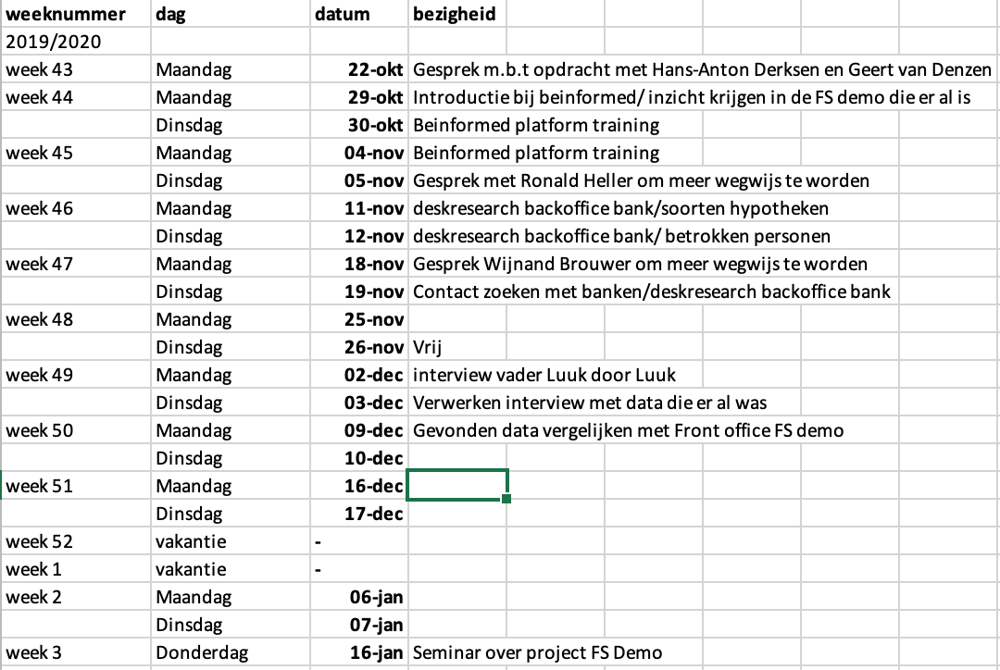

3. Projectmanagement
Het project binnen de minor Smart Industries is ongestructureerd. De student bepaalt zelf
grotendeels de invulling van het project. Alleen de kaders zijn geschetst met de daarbijhorende
domeincompetenties. Daarbij moet hij dus bepalen op welke manieren er het meest
efficiënt gecommuniceerd kan worden en zelf leiding en verantwoordelijk nemen voor de uitwerking van het
project.
Communicatie
Om eventuele communicatieve problemen te voorkomen zijn er in het begin een aantal duidelijke afspraken
gemaakt met betrekking op communicatie. Er is bijvoorbeeld doelbewust gekozen om Slack te gebruiken om
te communiceren met elkaar en met de opdrachtgever. Via
Slack is het naast gewoon communiceren mogelijk om bestanden te delen en te bewerken. Hier is voor
gekozen om zoveel mogelijk overzicht en duidelijkheid te bewaren. Verder werd er grotendeels
gecommuniceerd via Whats App aangezien dit anno 2019/2020 toch een van de makkelijkste en snelste
manieren van communiceren is.
Planning
Om een project juist en tijdig uit te voeren is het in de eerste instantie van belang een strakke en
duidelijke planning te hebben. Een planning geeft overzicht en controle en voorkomt stress en
teleurstelling. Er is voorafgaand dan ook een plan van aanpak opgesteld met daarin een zo duidelijk
mogelijke planning. Plannen is nooit mijn sterkste vaardigheid geweest. Het lastige met deze planning
was dat ik best wel afhankelijk was van de input van anderen. Denk aan werknemers bij Be Informed die
ook bezig zijn met hetzelfde project. Aangezien zij meer bezig zijn met de lange termijn is het lastig
bepaalde zaken te combineren. Omdat de planning vanuit school ook wekelijks gepland is, is er gekozen
voor een weekplanning. Achteraf gezien is er hier en daar afgeweken van de planning, maar dat is ook
niet meer dan normaal. Zo kan ik altijd nog terugblikken op deze periode en leren van de eventuele
fouten die destijds zijn gemaakt. Een screenshot van de planning is hieronder toegevoegd.

Resultaat
Aangezien het resultaat van dit
project best wel ingewikkeld is, is er voor gekozen om de documentatie voornamelijk visueel te doen.
Visueel is een complex onderwerp makkelijk in een oogopslag te begrijpen. De presentatie is hier
te vinden. Een overzichtelijke foto van het ontwikkelde resultaat, de back office
demo in BMS, zal na het seminar op 16 januari hieronder toegevoegd worden.